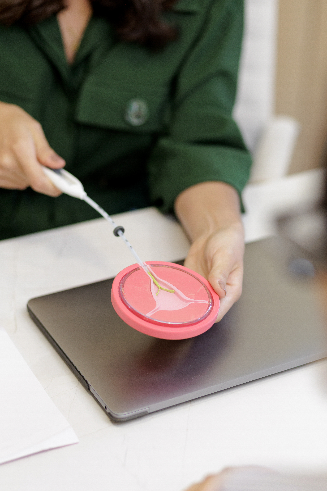
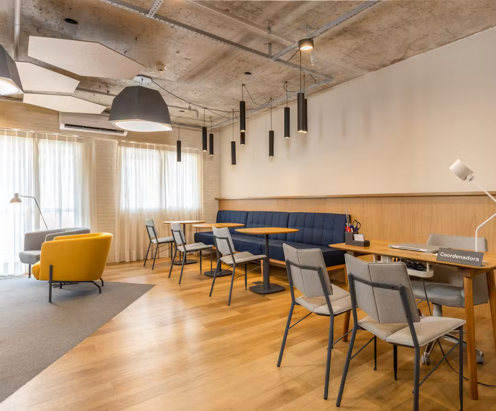
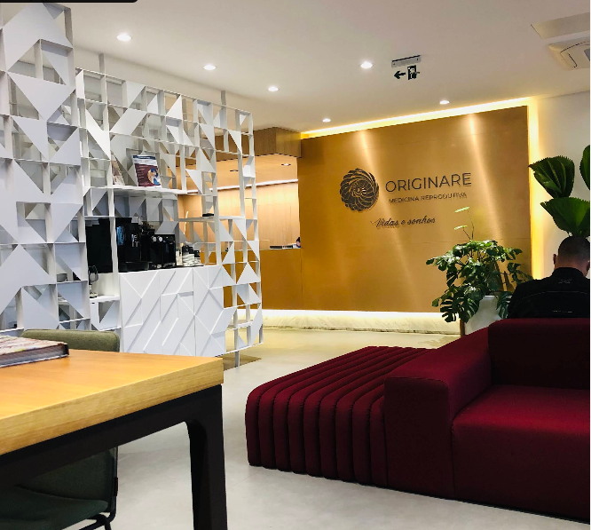

Seu corpo é único e a escolha do seu método contraceptivo também deve ser.
Ofereço um acompanhamento médico individualizado e cuidadoso para que você tome a melhor decisão para a sua rotina, sem pressa e com total segurança.
Ginecologia, contracepção e reprodução humana
O cuidado começa entendendo a sua história, suas dúvidas e a sua rotina. A partir daí, cada decisão é construída com clareza, segurança e tempo para conversar.
CRM 230244 · RQEs em Ginecologia e Reprodução
Médica ginecologista especialista em reprodução humana.
Experiência hospitalar
Atuação em ginecologia no Hospital São Luiz Campinas.
Formação e residência médica
UEPA e Hospital Universitário Bettina Ferro de Souza, da UFPA.
Fellowship pela Faculdade de Medicina da USP
Aprofundamento em climatério e ginecologia endócrina.
Experiência assistencial
Atuação na Fundação Santa Casa de Misericórdia do Pará, de 2019 a 2022.
Equipe médica da Originare
Atuação em reprodução humana, em São Paulo.
Seu momento importa
Nem toda dúvida precisa virar urgência para merecer atenção. Às vezes, a próxima decisão começa apenas com uma boa conversa.
Você quer trocar a pílula ou conhecer um novo método contraceptivo.
Você está considerando DIU ou Implanon e quer decidir com mais segurança.
Você percebeu mudanças no ciclo, cólicas intensas ou um fluxo diferente.
Você está pensando no seu planejamento reprodutivo, agora ou mais adiante.
Você busca uma profissional de confiança, com quem se sinta à vontade para conversar sobre o seu corpo e as suas escolhas.
Atendimentos
Um espaço para conversar com calma, entender as opções e cuidar da sua saúde íntima em diferentes momentos da vida.
Para quem quer conhecer melhor as opções, sair da pílula ou encontrar um método que acompanhe a rotina com mais tranquilidade.
Para avaliar, inserir, trocar ou retirar dispositivos com orientação individualizada e organização cuidadosa de cada etapa.
Para quem deseja investigar mudanças no ciclo, cólicas, fluxo ou questões que vêm pedindo mais atenção e cuidado.
Para decisões que envolvem o presente e o futuro: entender possibilidades, organizar prioridades e conversar sobre o seu planejamento.
A consulta é um espaço para entender o seu momento e definir, com segurança, o próximo passo mais adequado.
Eu não realizo apenas a inserção de dispositivos. Meu primeiro passo é sempre uma avaliação minuciosa para entender o seu histórico e, juntas, definirmos o caminho mais seguro para você.

Dispositivo intrauterino que oferece proteção segura e contínua. Vou avaliar com você a melhor opção para a sua rotina:
A praticidade invisível. Um pequeno implante flexível inserido sob a pele do braço que inibe a ovulação.
Médica ginecologista especialista em reprodução humana
Minha missão é transformar a ida ao ginecologista, que para muitas mulheres é sinônimo de pressa e desconforto, em um momento de escuta verdadeira e acolhimento.
Acredito em uma medicina baseada em evidências, mas entregue com técnica e sensibilidade. No meu consultório, eu não dito regras, eu te apresento caminhos.
O seu corpo, as suas escolhas, o nosso cuidado. Meu papel é te dar segurança para viver a sua liberdade contraceptiva.
Acolhimento desde a chegada
Um ambiente tranquilo para conversar sobre escolhas importantes com tempo, clareza e respeito ao seu momento.


Atendimento presencial
Consulte a localização, organize seu trajeto e tire suas dúvidas sobre agenda diretamente com a equipe pelo WhatsApp.
Conteúdo e informação
Conteúdos sobre contracepção, saúde íntima e decisões que fazem parte da vida de muitas mulheres.
Tudo o que você precisa saber antes de dar o próximo passo.
Para a sua total comodidade, nós cuidamos de toda a logística. O valor do procedimento já inclui o dispositivo (Mirena, Kyleena, Cobre, Prata ou Implanon), que fica disponível na clínica. A grande vantagem é que, caso você realize a inserção do método no mesmo dia da avaliação, o valor da consulta inicial é isento, e você investe apenas no valor do procedimento.
Esse é o maior medo das pacientes, e eu entendo perfeitamente! Utilizo protocolos atualizados de analgesia e um preparo cuidadoso no consultório para que a experiência seja a mais rápida e confortável possível. Explico cada etapa e respeito sempre o seu limite de conforto.
Não! Esse é um mito comum. O DIU pode ser inserido em qualquer fase do seu ciclo menstrual. Na consulta, avaliaremos juntas o melhor momento para o seu corpo.
A recuperação costuma ser tranquila. A maioria das pacientes retorna às atividades de trabalho, estudo e até aos exercícios no mesmo dia, sem restrições. Estarei à disposição no pós-procedimento para qualquer orientação.
Com certeza! É mito dizer que mulheres que nunca engravidaram não podem usar DIU. Hoje temos modelos menores (como o Kyleena e alguns de Cobre/Prata) perfeitos para úteros menores. Na consulta, avaliaremos a sua anatomia para escolher o tamanho ideal com segurança.
Os métodos como Mirena, Kyleena e Implanon possuem dosagens hormonais muito mais baixas do que a pílula. Além disso, muitas pacientes desconhecem que o Mirena não é apenas um excelente contraceptivo, mas também um grande aliado como terapia hormonal para mulheres na menopausa. Analisaremos o seu histórico para escolher a melhor opção.